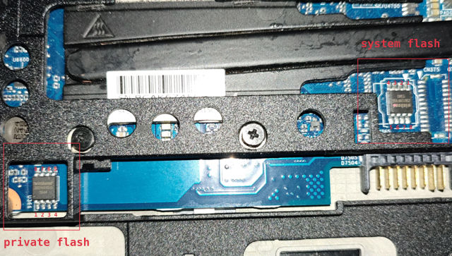

HP EliteBook 820 G2
This page is about the notebook HP EliteBook 820 G2.
Release status
HP EliteBook 820 G2 was released in 2015 and is now end of life. It can be bought from a secondhand market like Taobao or eBay.
Required proprietary blobs
The following blobs are required to operate the hardware:
EC firmware
Intel ME firmware
Broadwell mrc.bin and refcode.elf
HP EliteBook 820 G2 uses SMSC MEC1324 as its embedded controller. The EC firmware is stored in the flash chip, but we don’t need to touch it or use it in the coreboot build process.
Intel ME firmware is in the flash chip. It is not needed when building coreboot.
The Broadwell memory reference code binary and reference code blob is needed when building coreboot. Read the document Blobs used in Intel Broadwell boards on how to get these blobs.
Programming
Before flashing, remove the battery and the hard drive cover according to the Maintenance and Service Guide of this laptop.
HP EliteBook 820 G2 has two flash chips, a 16MiB system flash, and a 2MiB private flash. To install coreboot, we need to program both flash chips. Read HP Sure Start for detailed information.

To access the system flash, we need to connect the AC adapter to the machine, then clip on the flash chip with an SOIC-8 clip. An STM32-based flash programmer made with an STM32 development board is tested to work.
To access the private flash chip, we can use a ch341a based flash programmer and flash the chip with the AC adapter disconnected.
To flash coreboot on a board running OME firmware, create a backup for both flash chips, then do the following:
Erase the private flash to disable the IFD protection
Modify the IFD to shrink the BIOS region, so that we can put the firmware outside the protected flash region
To erase the private flash chip, attach it with the flash programmer via the SOIC-8 clip, then run:
flashrom -p <programmer> --erase
To modify the IFD, write the following flash layout to a file:
00000000:00000fff fd
00001000:00002fff gbe
00003000:005fffff me
00600000:00bfffff bios
00eb5000:00ffffff pd
Suppose the above layout file is layout.txt and the origin content of the system flash
is in factory-sys.rom, run:
ifdtool -n layout.txt factory-sys.rom
Then a flash image with a new IFD will be in factory-sys.rom.new.
Flash the IFD of the system flash:
flashrom -p <programmer> --ifd -i fd -w factory-sys.rom.new
Then flash the coreboot image:
# first extend the 12M coreboot.rom to 16M
fallocate -l 16M build/coreboot.rom
flashrom -p <programmer> --ifd -i bios -w build/coreboot.rom
After coreboot is installed, the coreboot firmware can be updated with internal flashing:
flashrom -p internal --ifd -i bios --noverify-all -w build/coreboot.rom
Debugging
The board can be debugged with EHCI debug. The EHCI debug port is the USB port on the left.
Test status
Untested
NFC module
Fingerprint reader
Smart Card reader
Working
mainboards with i3-5010U, i5-5300U CPU, 16G+8G DDR3L memory
SATA and M.2 SATA disk
PCIe SSD
Webcam
Touch screen
Audio output from speaker and headphone jack
Intel GbE (needs a modified refcode documented in Blobs used in Intel Broadwell boards)
WLAN
WWAN
SD card reader
Internal LCD, DisplayPort and VGA video outputs
Dock
USB
Keyboard and touchpad
EC ACPI
S3 resume
TPM
Arch Linux with Linux 5.11.16
Broadwell MRC version 2.6.0 Build 0 and refcode from Purism Librem 13 v1
Graphics initialization with libgfxinit
Payload: SeaBIOS 1.16.2
EC firmware: KBC Revision 96.54 from OEM firmware version 01.05
Internal flashing under coreboot
Technology
SoC |
Intel Broadwell |
EC |
SMSC MEC1324 |
Coprocessor |
Intel Management Engine |